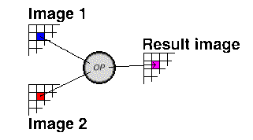

SetBlue is a binary operator. A binary operator is one which takes data from two images and generates a third image.
It does this by taking the value of the corresponding pixels in each of the two input images and combining the
values using some operator to generate the apropriate pixel in the third image. Both input images must have the same
dimensions.
SetBlue takes the blue channel from one TrianaPixelMap and combines it with the red and green channels of the
other. Mathematically it can be expressed as follows:
rr(i, j) = r2(i, j)
gr(i, j) = g2(i, j)
br(i, J) = b1(i, j)
See also
GetRed,
SetRed,
GetGreen,
SetGreen,
SetBlue